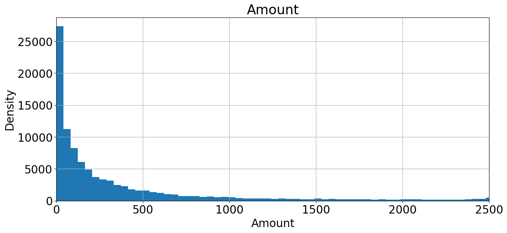
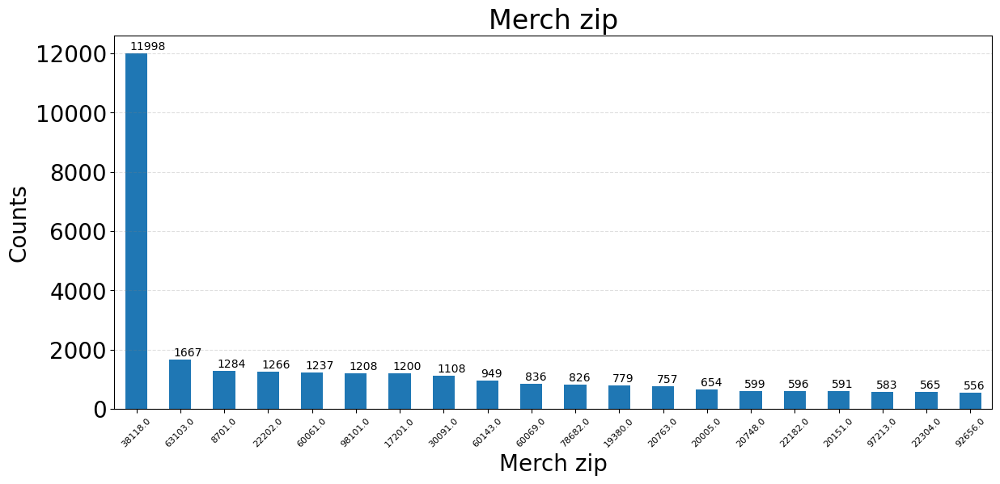
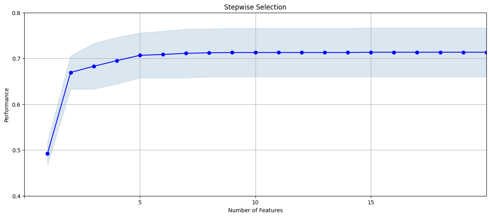
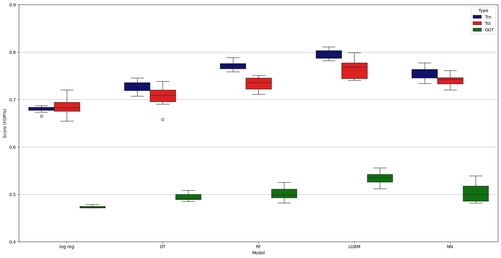

Credit Card Fraud Detection
Introduction
Credit card fraud poses a persistent risk to financial institutions, resulting in substantial financial losses and increased operational burden. As digital transactions continue to grow, detecting fraudulent behavior accurately and efficiently has become increasingly important.
This project develops a structured analytical framework for identifying fraudulent credit card transactions using historical transaction data. The dataset contains 97,852 transactions, of which 2,047 are labeled as fraudulent, reflecting a highly imbalanced classification problem.
The report outlines the full modeling workflow, from data preparation to model evaluation, with emphasis on building a practical and deployable fraud detection system.
Objective
The primary objective of this project is to build a machine learning model capable of identifying fraudulent transactions while controlling false positives.
Specifically, the goals are:
- Develop a robust fraud detection pipeline including cleaning, feature engineering, and model selection
- Evaluate model performance using out-of-time validation
- Determine an operational cutoff that balances fraud capture and review cost
- Quantify the financial impact of the selected decision threshold
The final model is assessed not only on predictive performance but also on its practical business value.
Data Description
The dataset contains 97,852 credit card transactions recorded in 2010. Each transaction includes numeric, categorical, and temporal variables used to model fraudulent behavior.
Numeric Variables
| Field Name | # Records | % Populated | # Zeros | Min | Max | Mean | Std Dev | Most Common |
|---|---|---|---|---|---|---|---|---|
| Amount | 97,852 | 100% | 0 | 0.01 | 3,102,045.53 | 425.47 | 9,949.80 | 3.62 |
| Fraud | 97,852 | 100% | 95,805 | 0 | 1 | 0.0209 | 0.14 | 0 |
- Amount shows a highly right-skewed distribution, with extreme high-value transactions.
- Fraud is the target variable. Fraudulent transactions account for approximately 2.09% of the dataset, indicating strong class imbalance.
Categorical Variables
| Field Name | # Records | % Populated | # Unique | Most Common |
|---|---|---|---|---|
| Recnum | 97,852 | 100% | 97,852 | 1 |
| Cardnum | 97,852 | 100% | 1,645 | 5142148452 |
| Merchnum | 94,455 | 96.5% | 13,091 | 930090121224 |
| Merch description | 97,852 | 100% | 13,126 | GSA-FSS-ADV |
| Merch state | 96,649 | 98.8% | 227 | TN |
| Merch zip | 93,149 | 95.2% | 4,567 | 38118 |
| Transtype | 97,852 | 100% | 4 | P |
- Transaction identifiers such as Recnum are unique per record.
- Merchant-related fields (Merchnum, Merch description, Merch state, Merch zip) provide geographic and behavioral context.
- Missing values are primarily present in merchant-related fields.
- Transtype contains four transaction categories.
Temporal Variable
| Field Name | # Records | % Populated | Earliest Date | Latest Date | Most Common |
|---|---|---|---|---|---|
| Date | 97,852 | 100% | 2010-01-01 | 2010-12-31 | 2010-02-28 |
- The data spans the full calendar year of 2010.
- The availability of transaction dates enables temporal feature engineering such as velocity and recency variables.
Amount
Transaction amounts are strongly right-skewed. Most transactions are small, while a small number reach very high values.
- Only 3 transactions exceed $30,275.
- The majority fall below $3,000.
- A long right tail is clearly visible.
Because extreme values can dominate tree splits and distort scale-sensitive features, this variable will be transformed or capped during preprocessing.
Amount Distribution (Full Scale)
Figure 1. Transaction amount distribution (full scale)

To better visualize the heavy tail, the density axis is log-transformed.
Amount Distribution (Log Scale)
Figure 2. Transaction amount distribution (log scale)

The log-scale view highlights the spread of high-value transactions without being dominated by the tail.
Merch State
Figure 3. Top 20 merchant states by transaction count

The top 20 merchant states account for a large share of transactions.
TN has the highest volume (12,169 transactions), followed by several other high-activity states. Transaction activity is clearly concentrated geographically rather than evenly distributed across states.
Merch Zip
Figure 4. Top 20 merchant ZIP codes by transaction count

- ZIP code 38118 alone accounts for 11,998 transactions.
- A small number of ZIP codes represent a disproportionate share of activity.
This level of concentration indicates strong location clustering in the data.
Fraud (Target Variable)
Figure 5. Fraud vs non-fraud distribution

- 95,805 non-fraud transactions
- 2,047 fraud transactions
- Fraud rate ≈ 2.09%
Given this imbalance, overall accuracy is not an informative metric. Model evaluation will focus on fraud detection rate and decision thresholds aligned with business impact.
Data Cleaning
1. Outlier Removal
The transaction amount variable contains one extreme observation:
- Recnum #53179
- Amount: $3,102,045
- Threshold: $30,275 (3 standard deviations above the mean)
After review with the business manager, this transaction was considered anomalous and removed from modeling.
- Records reduced from 97,852 to 97,851.
2. Data Exclusions – Transaction Type
The variable Transtype contains four categories:
- P: 97,497
- A: 181
- D: 173
- Y: 1
Because the business team could not clearly define categories A, D, and Y, these transactions were excluded to avoid introducing ambiguity into the model.
- Records reduced from 97,851 to 97,496.
3. Handling Missing and Invalid Values
Several merchant-related fields contained missing or invalid values.
3.1 Merchnum
- 3,279 missing values (including 59 records coded as 0, treated as null).
Imputation strategy:
- Recovered 1,164 values using matching
Merch description. - Assigned “unknown” to records with descriptions such as
RETAIL CREDIT ADJUSTMENT and RETAIL DEBIT ADJUSTMENT (694 records). - For the remaining records, new merchant IDs were created based on unique merchant descriptions.
After imputation, missing values in Merchnum were reduced to zero.
3.2 Merch State
- 1,028 missing values.
Imputation strategy:
- Recovered state values using corresponding ZIP codes.
- Used merchant number and description matching where possible.
- Assigned “unknown” to adjustment-type transactions.
- Remaining missing values were set to “unknown”.
- Non-U.S. states were recoded as “foreign”.
This approach preserves geographic signal while avoiding artificial distortion.
3.3 Merch Zip
- 4,347 missing values.
Imputation strategy:
- Recovered ZIP codes using merchant number and description mapping.
- For records with known state but missing ZIP, assigned the most common ZIP within that state.
- Remaining missing values were set to “unknown”.
Data Status After Cleaning
All key merchant fields (Merchnum, Merch state, Merch zip) were fully resolved, and the dataset was prepared for feature engineering.
Final dataset size: 97,496 transactions
Variable Creation
This project focuses on Card-Not-Present (CNP) fraud, where stolen card information is used across different merchants or locations without physical verification. Suspicious patterns often include:
- The same card appearing in multiple states or ZIP codes within short periods
- Sudden increases in transaction frequency
- Rapid changes in spending behavior
- Transactions at unfamiliar merchants
To capture these patterns, features were engineered around transaction timing, spending intensity, and entity relationships. Variables were created under four principles:
- Amount Features – Rolling statistics of transaction amounts (mean, max, median, sum, and ratios) across multiple time windows.
- Frequency Features – Transaction counts within rolling windows (0, 1, 3, 7, 14, 30, 60 days).
- Velocity Features – Short-term activity compared to longer-term historical behavior.
- Recency Features – Days since previous transaction.
Features were computed across key entities such as Cardnum, Merchnum, Merch state, Merch zip, and their linkages.
Summary of Variables Created
| Category | # Fields Created | Cumulative |
|---|---|---|
| Original fields | 10 | 10 |
| Day-of-week + encoding | 2 | 12 |
| Entity linkings | 21 | 33 |
| Target encoding | 3 | 36 |
| Days-since features | 23 | 59 |
| Frequency features | 161 | 220 |
| Amount features | 1,288 | 1,508 |
| Velocity features | 552 | 2,060 |
| Amount difference features | 414 | 2,474 |
| Cross-entity frequency | 696 | 3,170 |
| Normalized velocity | 184 | 3,354 |
| Amount binning | 1 | 3,355 |
| Foreign indicator | 1 | 3,356 |
| New entity flags | 22 | 3,378 |
| Holiday indicator | 1 | 3,379 |
Total engineered variables: 3,379
Feature Selection
Feature selection was conducted in two stages: filtering and wrapping.
1. Filtering
Each variable was ranked independently using the Kolmogorov–Smirnov (KS) statistic.
The top candidate features were selected based on:
- 130 variables (≈10% of total features)
- 260 variables (≈20% of total features)
These filtered sets were passed to the wrapper stage.
2. Wrapping
Forward selection was applied using two models:
- LightGBM (LGBM) – deterministic
- Random Forest (RF) – stochastic
For RF, training was repeated five times and the most frequently selected feature combination was retained.
Wrapper sizes tested: - 10 features - 20 features
The wrapper objective was Fraud Detection Rate at 3% (FDR@3%).
Results Summary
| Direction | # Filters | # Wrappers | Model | Stochastic | Avg Performance |
|---|---|---|---|---|---|
| Forward | 130 | 10 | LGBM | No | 0.71 |
| Forward | 130 | 10 | RF | Yes | 0.66 |
| Forward | 130 | 20 | LGBM | No | 0.71 |
| Forward | 130 | 20 | RF | Yes | 0.66 |
| Forward | 260 | 10 | LGBM | No | 0.72 |
| Forward | 260 | 10 | RF | Yes | 0.66 |
| Forward | 260 | 20 | LGBM | No | 0.72 |
| Forward | 260 | 20 | RF | Yes | 0.68 |
Observations
- LightGBM consistently outperformed Random Forest.
- Increasing the filter pool from 130 to 260 improved performance.
- Expanding wrappers from 10 to 20 features did not materially improve results.
Based on these findings, LightGBM with 260 filtered candidates was selected for subsequent modeling.
Wrapper Results (Forward Selection)
Forward selection was applied using different filter sizes and wrapper counts.
Performance is measured using FDR@3%.
| Filters | Wrappers | Model | Stochastic | FDR@3% |
|---|---|---|---|---|
| 260 | 10 | LGBM | No | 0.72 |
| 260 | 10 | RF | Yes | 0.66 |
| 260 | 20 | LGBM | No | 0.72 |
| 260 | 20 | RF | Yes | 0.68 |
| 520 | 10 | LGBM | No | 0.72 |
| 520 | 10 | RF | Yes | 0.71 |
| 520 | 20 | LGBM | No | 0.73 |
| 520 | 20 | RF | Yes | 0.73 |
Stepwise Selection Performance
Figure 6. Forward stepwise selection performance curve

The performance curve increases rapidly in the first few steps and stabilizes after approximately 12 features, indicating diminishing returns from adding additional variables.
Feature Selection Conclusion
Increasing the number of filtered candidates improved wrapper performance.
With 520 filters and 20 wrappers, both LightGBM and Random Forest achieved an average performance of 0.73.
LightGBM was selected as the final wrapper model because it is deterministic and produces stable feature rankings across runs, whereas Random Forest introduces variability due to its stochastic nature.
The forward selection curve shows performance stabilizing after approximately 12 features. However, to ensure sufficient coverage of relevant signals, we retained 20 features (approximately twice the saturation size) for the final model.
Selected Variables (Top 20)
| Field Name | Cumulative Score |
|---|---|
| Cardnum_unique_count_for_card_state_1 | 0.492025 |
| Card_Merchdesc_State_total_7 | 0.669325 |
| Cardnum_count_1_by_30 | 0.688957 |
| Cardnum_max_14 | 0.698160 |
| Card_dow_vdratio_0by60 | 0.704908 |
| Card_dow_vdratio_0by14 | 0.708589 |
| Merchnum_desc_State_total_3 | 0.714724 |
| Card_Merchdesc_total_7 | 0.716564 |
| Card_dow_unique_count_for_merch_zip_7 | 0.720859 |
| Cardnum_actual/toal_0 | 0.726380 |
| Card_dow_vdratio_0by7 | 0.728834 |
| Cardnum_vdratio_1by7 | 0.730061 |
| Cardnum_unique_count_for_card_state_3 | 0.730061 |
| Cardnum_unique_count_for_card_zip_3 | 0.730061 |
| Merchnum_desc_Zip_total_3 | 0.730061 |
| Cardnum_unique_count_for_Merchnum_3 | 0.730061 |
| Cardnum_actual/toal_1 | 0.730061 |
| Cardnum_unique_count_for_card_state_7 | 0.730061 |
| Cardnum_actual/max_0 | 0.730061 |
| Card_dow_unique_count_for_merch_state_1 | 0.730061 |
Preliminary Model Exploration
We compared a baseline linear model against several non-linear models. All models were evaluated using FDR@3% on training, testing, and out-of-time (OOT) data.
- Baseline: Logistic Regression
- Non-linear models: Decision Tree, Random Forest, LightGBM, Neural Network
Models Compared
- Logistic Regression: baseline linear classifier for interpretability and a stable benchmark.
- Decision Tree: single-tree model that captures non-linear splits but can overfit.
- Random Forest: bagged trees that reduce variance and improve stability over a single tree.
- LightGBM: gradient-boosted trees that typically perform well on structured/tabular data.
- Neural Network: flexible non-linear function approximator, included as a higher-capacity alternative.
Hyperparameters
- Logistic Regression:
penalty='l1',C=0.01,solver='liblinear'
- Decision Tree:
criterion='gini',max_depth=8,min_samples_split=120,min_samples_leaf=60
- Random Forest:
criterion='gini',n_estimators=30,max_depth=8,min_samples_split=120,min_samples_leaf=60
- LightGBM:
n_estimators=30,num_leaves=4,learning_rate=0.1
- Neural Net:
activation='relu',hidden_layer_sizes=(20, 20),solver='adam',alpha=0.005,learning_rate_init=0.01
Model Performance Comparison
Figure 7. Model performance comparison (FDR@3%)

LightGBM shows the strongest overall performance and the best OOT results among the models tested, which is the main factor for model selection in this project.
Final Model Performance
Model Selection
LightGBM was selected as the final model based on its balance between in-sample performance and out-of-time (OOT) stability.
| Model | Train | Test | OOT |
|---|---|---|---|
| LGBM | 0.7438 | 0.7490 | 0.5296 |
Training and testing scores are closely aligned, indicating controlled model complexity. Although performance declines on OOT data, LightGBM maintains stronger generalization compared to the other models evaluated.
Hyperparameters
n_estimators = 30
num_leaves = 4
learning_rate = 0.1
max_depth = default
The configuration favors a shallow boosting structure with limited leaf growth. This reduces variance and improves stability under time drift, which is critical for fraud detection.
The moderate learning rate ensures gradual updates across boosting rounds, avoiding aggressive fitting to short-term noise.
Performance Summary
- Train and test scores are stable.
- OOT performance remains consistent with wrapper-stage expectations.
- No large divergence between datasets, suggesting controlled overfitting.
The final model is therefore suitable for operational deployment under a defined fraud detection threshold.
Financial Impact and Recommended Cutoff
Financial Assumptions
To translate model performance into business impact, the following assumptions were applied:
- $400 gain per fraud transaction correctly detected
- $20 loss per false positive
- The sample (~100,000 records) represents a portfolio of 10 million transactions per year
- The dataset covers 2 months of activity; annualized by multiplying by 6
Financial Curves
Figure 8. Financial impact curve across cutoff percentages

- Green: Fraud dollars captured
- Red: Revenue loss from false positives
- Blue: Net overall savings
Fraud capture increases steadily as the cutoff expands. However, false positive cost also rises, reducing net gains beyond a certain point.
Cutoff Comparison
| Cutoff % | Overall Savings | FDR | FPR |
|---|---|---|---|
| 1% | $23,484,000 | 33.3% | 0.232% |
| 2% | $28,308,000 | 41.8% | 0.976% |
| 3% | $35,664,000 | 53.5% | 1.308% |
| 4% | $40,500,000 | 62.0% | 1.658% |
| 5% | $43,056,000 | 67.3% | 2.060% |
| 6% | $45,120,000 | 72.1% | 2.430% |
Recommended Cutoff: 4%
At a 4% cutoff:
- 62% of fraudulent transactions are detected
- False positive rate remains controlled at 1.658%
- Estimated annual savings: $40.5 million
Although higher cutoffs increase fraud detection, they also introduce rising false positive costs and operational friction. The 4% threshold balances fraud capture and customer impact while delivering strong financial return.
Summary
This project developed a data-driven credit card fraud detection model using 97,852 transactions, of which approximately 2% were fraudulent.
A structured pipeline was implemented, including data cleaning, feature engineering, feature selection, and model comparison. From 3,379 engineered variables, the top 20 were selected using a filter-and-wrapper approach.
Among the models evaluated, LightGBM demonstrated the strongest balance between in-sample performance and out-of-time stability. The final model achieved:
- Train FDR: 0.744
- Test FDR: 0.749
- OOT FDR: 0.530
A 4% decision cutoff was selected based on financial impact analysis. At this threshold:
- 62% of fraud is detected
- False positive rate remains controlled at 1.658%
- Estimated annual savings: $40.5 million
The results indicate that behavioral feature engineering combined with boosted tree models provides strong performance under time drift. Future improvements may focus on additional data sources and enhanced behavioral signals to further improve OOT stability.